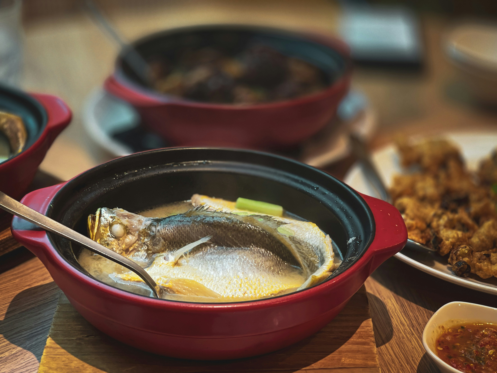

Fish Soup Recipe
Home

Fish soup, image from Unsplash by Bao Menglong
Description
To make a delicious fish soup of 8 servings, you need
- 1 litre water
- 1 kg potatoes
- 1 large yellow onion
- 1 tbsp salt
- 500 grams fish of your choosing, e.g. salmon
- 2 tbsp fish fondue
- 200 grams of cream cheese
- 2 dl of full fat cream
- Fresh dill on top
To make the soup, just follow these simple steps
- Boil the water. Add salt, peeled potatoes and onion in. Boil for 20 minutes.
- Slice or cube the fish and add into the soup. Boil for another 10 minutes
- Add the fondue and cream cheese in. Boil for 5 more minutes on medium to low heat
- Add cream and take off the heat
- Add some fresh dill on top of the soup. Serve hot.